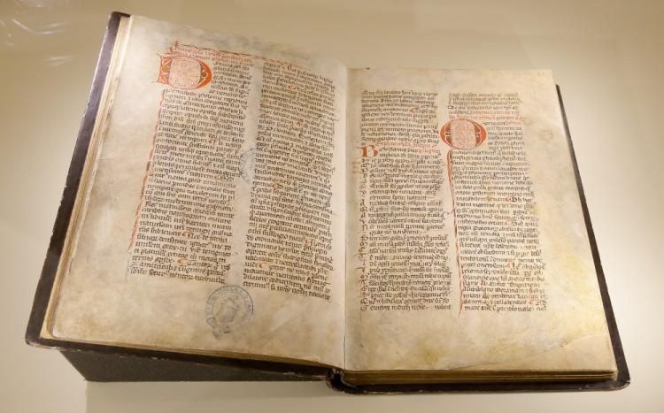

The consequences of Bolesław's rule
Bolesławs' expansions dried the countries voult's dry, and it was followed by a collapse of the monarchy.
Recovery took place under Casimir I the Restorer (1039–58), Casimir's son Bolesław II the Generous (1058–79) became involved in a conflict with Bishop Stanislaus of Szczepanów, which ended in his downfall.
Around the year 1116 Gallus Anonymus wrote a chronicle, in wich he wrote the Polish history, it was ment to be a glorification of his patron Bolesław III Wrymouth (1107–38), a ruler who revived Poland to its time under Bolesław I, none the less its an important source for the early history of Poland.

